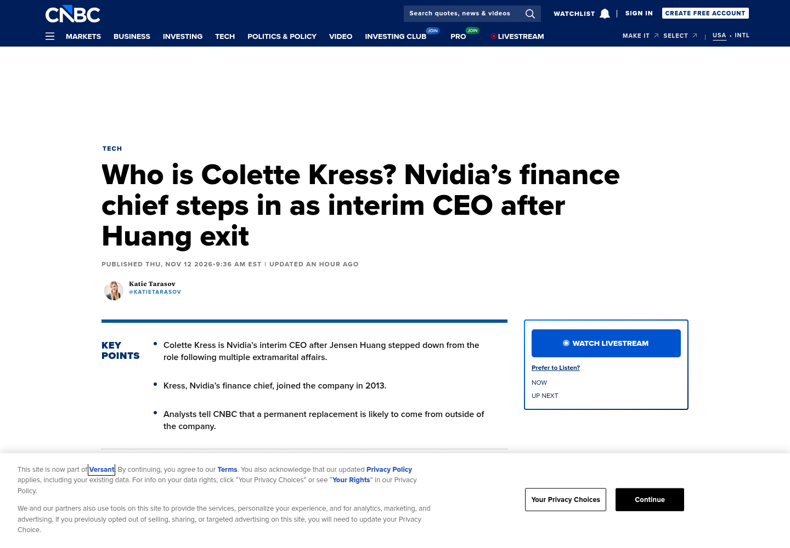

News capture · Nov 12The board accepted Jensen Huang’s resignation — effective immediately.
SEC 8-K: resignation as President, CEO and director accepted Nov 11. CFO Colette Kress is interim CEO while the search runs; Harvey C. Jones (board member since 1993) becomes the first-ever chair. Board statement: operations, customer commitments and roadmap “continue without interruption.” Q3 earnings hold on Nov 17.
▶ LIVE · nvidianews.nvidia.com · SEC 8-K on Sources